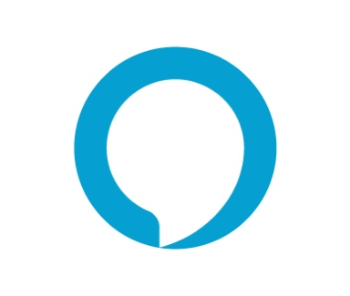

Products


Public Releases
-
AWS App Runner now supports HTTP to HTTPS redirect
Launched on: Feb 22, 2023
-
AWS App Runner now supports privately accessible services within Amazon VPC
Launched on: Nov 1, 2022
-
AWS App Runner now supports Amazon Route 53 alias record for root domain name
Launched on: Sep 6, 2022
-
AWS App Runner launches AWS X-Ray support
Social media:
Launched on: Apr 12, 2022
-
AWS App Runner adds support for Amazon VPC
Launched on: Feb 9, 2022
-
AWS Announces General Availability of AWS App Runner
Social media: InfoQ | Q&A with AWS VP of Compute Services Deepak Singh about AWS App Runner
Launched on: May 18, 2021
-

Alexa HIPAA-Eligible Skill Program
Launched on: Aug 27, 2020
-
New ways to manage your medications at home using Alexa
Social media: Forbes | TechCrunch | CNBC
Launched on: November 26, 2019
-
Amazon Web Services EMEA SARL (“AWS Europe”), Luxembourg-based AWS entity, started selling our services. | AWS Marketplace EMEA Seller of Record
Social media: DELANO | Amazon Web Services to become Luxembourg entity
, blogpost
Launched on: July 1, 2018